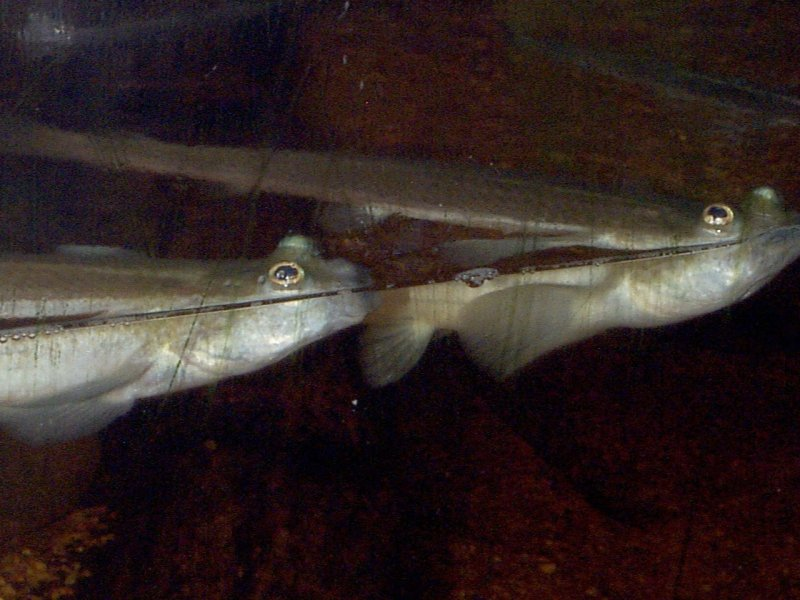

Here is how the Saint Louis Zoo describes this
creature:
“Each of the fish's two eyes
is
divided by a horizontal
band, essentially creating four eyes. The upper portions see above
the
water
and the lower portions see below…at the same time! This special
ability
lets
the fish keep an eye out for food or foes, wherever they may be --
a
handy
adaptation for life at the water's surface. Four-eyed
fish are unusual in another way. Both males
and females have sex organs that are turned either to the right
or to
the left.
A "right" female can only mate with a "left" male, and vice
versa. This feature is shared with only a few other fish
species.”